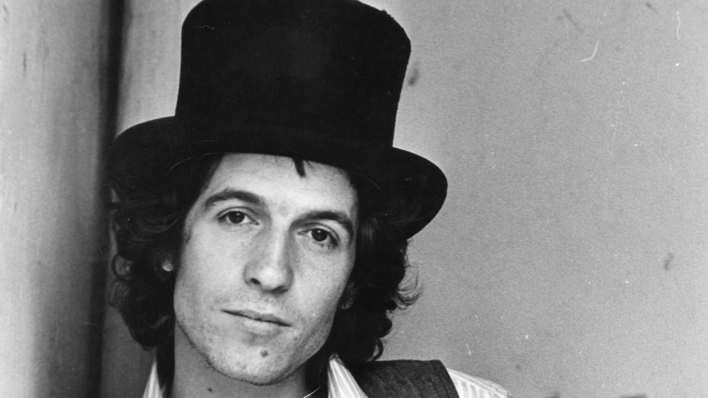
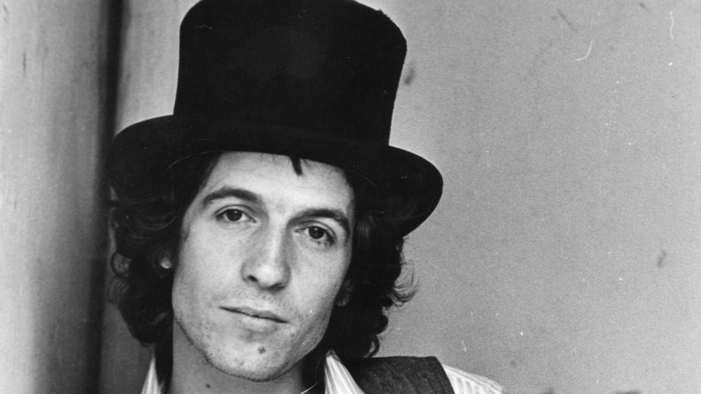
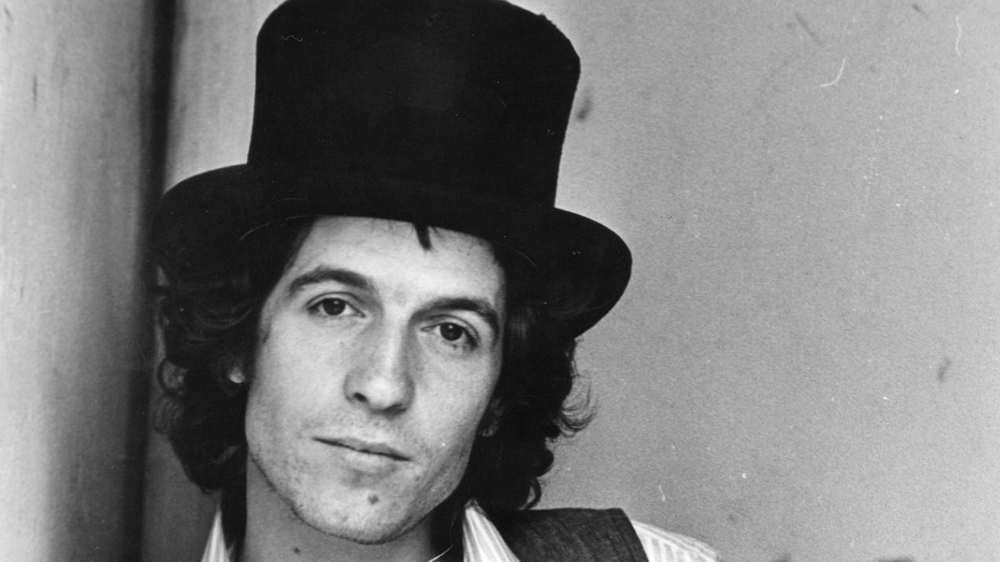

In this song, you hear the name Aida, and now one wonders, who is Aida? Rino Gaetano compares Aida to Italy. This symbolic woman relives her memories, passions, and emotions, signifying the retelling of Italian history from colonial wars to the post-war period.
But why did Rino Gaetano choose the name Aida? Because the author wants to pay homage to Giuseppe Verdi, in fact, it can be noticed how the initial melody is very similar to Verdi's "Aida" triumphal march.
The song begins by describing how difficult it is for a girl from the early 1900s to live something like her own sexuality. In Italy, there is a strong Catholic component, which is why the song says "le madonne i rosari un tabù" (the Madonnas, the rosaries, a taboo). It then talks about the war when it says "1000 mari" (a thousand seas), referring to a thought of the ancient Romans that was later adopted by the far-right politics of that time.
Even "e alalà" was a war cry of the aviation probably invented by Gabriele d'Annunzio. There are many clues that help us understand the historical period we are in.
Rino Gaetano also uses cinema at one point, mentioning "Marlene e Charlotte," which are obviously Marlene Dietrich and Charlie Chaplin.
"And after June, the great conflict" - on June 10, 1940, Benito Mussolini begins the North African campaigns, and Italy enters the war. Fortunately, the war ends, which is why compromises, poverty, and low wages are mentioned. "Errore russo Cristo e Stalin" (Russian error Christ and Stalin) - the singer-songwriter refers to Pope Pius XII, who in 1949 excommunicated the communists.
Finally, it speaks of "trent'anni di Safari" (thirty years of Safari), which is obviously a reference to the politics that will come later and the search for democracy, which was delayed but finally arrived.
Rino Gaetano was an Italian singer-songwriter, born on October 29, 1950, in Crotone, Calabria. From a young age, Gaetano showed a great passion for music. During his university years in Rome, he began playing the guitar and performing in various venues and clubs in the city.
His music career took a significant turn in 1974 when he released his first album titled "Ingresso libero". The album achieved good success, especially thanks to songs like "Ma il cielo è sempre più blu" and "Gianna". The latter song became a real hit and helped Gaetano gain a broader audience.
Gaetano was known for his eclectic musical style, blending rock, folk, and pop. His songs were characterized by ironic, critical, and often provocative lyrics that addressed social and political issues. His lyrics touched on topics such as corruption, hypocrisy, and social inequalities, but they were also imbued with a sense of hope and love for life.
Despite his undeniable talent, Gaetano did not achieve lasting success in his career due to artistic management issues and some controversies. However, his music continues to be loved and appreciated even after his premature death in 1981 at the age of 31 in a tragic car accident.
Rino Gaetano is remembered as one of the greatest Italian singer-songwriters of the 1970s, and his contribution to Italian music remains significant. His songs are still considered true milestones in Italian music, and his unique voice and lyrics have been a source of inspiration for many subsequent artists.
click here and listen now
